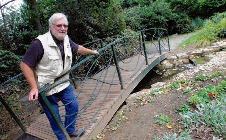

£15K Legacy Brings Gardens Beauty Spot Back to Life

A legacy to the Gardens of £15,000 left by Pauline Hart, who died in July last year aged 82, has been used to help pay for a new £25,000 bridge over the pond, which will be named the Pauline Hart Bridge. Braintree resident Mark Brereton has offered his services free of charge to clear out the pond, plant it with lilies and bring the fountain back to life.
Braintree and Bocking Public Gardens are very grateful to Trustee Tony Harrison (pictured) for masterminding the project, and for assembling and erecting the bridge almost single-handedly.
We look forward to a grand opening ceremony in the spring when the pond and fountain are restored to their former glory.
Read more at the Braintree and Witham Times.
------------------------------------------------------------------
Gardens Feature on BBC Radio Essex Essex Quest
Essex Quest led its presenters to the Gardens on Sunday 20th October, with listeners phoning in answers to cryptic clues to find us as a place of local interest. The broadcast included an interview with Trustee Julien Courtauld.
------------------------------------------------------------------
History of the Gardens Booklet Published
'Whither the Tired Mechanic Could Resort; A History of Braintree & Bocking Public Gardens' by local history expert Michael Bardell, is now available to buy for £5 in the Gardens cafe, with every penny of profit to the upkeep of the Gardens.